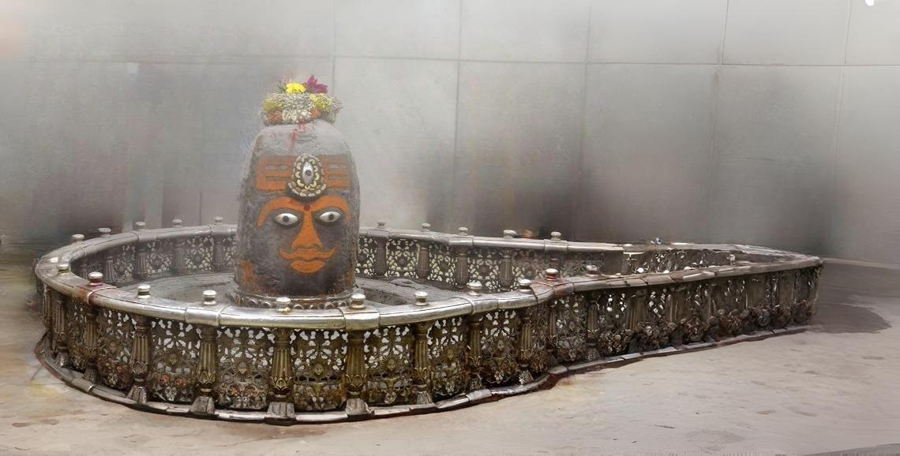

Madhya Pradesh
Ujjain: The City of Mahakal
Welcome to the ancient city of Ujjain, a Tirtha that stands outside the conventional bounds of time. This is the sacred abode of Mahakaleshwar, the great Lord of Time, one of the twelve divine Jyotirlingas. As one of the seven sacred Sapta Puris, a pilgrimage to Ujjain is a journey to confront the ultimate reality of existence and to seek the blessings of Lord Shiva as the supreme controller of the cosmos.
The Puranic Origin: The Lord Emerges
The *Skanda Purana's Avantya Khanda* narrates that the city of Avanti (the ancient name for Ujjain) was once terrorized by a fierce demon named Dushan. The devout Brahmin priests of the city prayed fervently to Lord Shiva for protection. Pleased by their devotion, Lord Shiva split the earth and emerged in his formidable form as Mahakal, the Great Time. With a single roar, he reduced the demon to ashes. At the request of the grateful priests, he agreed to reside here permanently as the Mahakaleshwar Jyotirlinga to protect all his devotees.
Key Spiritual Experiences
The Bhasma Aarti: A Ritual Beyond Time. The most unique and powerful ritual at Ujjain is the Bhasma Aarti, which takes place before dawn. This is the only Jyotirlinga where the Lord is awakened with an offering of fresh funeral ash (*bhasma*), symbolizing that Shiva is the ultimate reality beyond both life and death. To witness this profound ceremony is a deeply transformative experience.
Holy Dip in the Shipra River: The sacred Shipra river flows through Ujjain. A holy dip at the Ram Ghat is a vital act of purification before seeking the *darśana* of Mahakal. This river is also the site of the Simhastha Kumbh Mela, one of the largest spiritual gatherings on earth, held every 12 years.
Kal Bhairav Temple: A short distance from the main temple is the ancient shrine of Kal Bhairav, the fierce guardian of the city. Uniquely, the primary offering made to the deity is liquor, which is miraculously consumed by the idol. A visit here is considered essential to completing the pilgrimage to Ujjain.